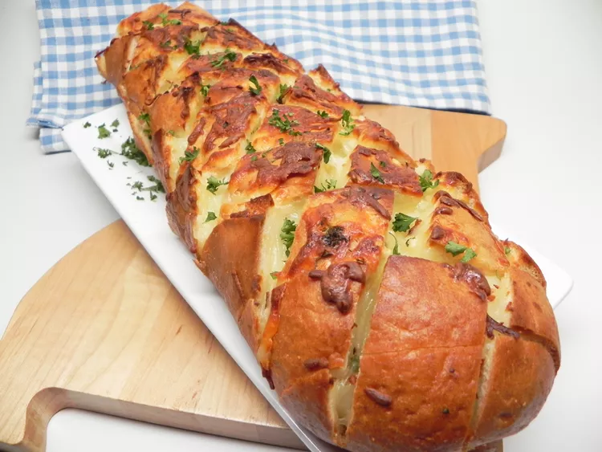

Home
Stuffed Italian Bread

Description
This stuffed Italian bread is an easy way to dress up a plain loaf of bread! Great as an appetizer or
as a side dish to grilled steaks. My local grocery sells a blend of mozzarella and provolone cheese that I use.
Ingredients
- ½ cup unsalted butter, melted
- 3 tablespoons chopped fresh parsley
- 2 tablespoons olive oil
- 3 cloves garlic, minced
- 1 loaf Italian bread
- 12 ounces shredded Italian cheese blend
Steps
- Preheat the oven to 350 degrees F (175 degrees C).
- Combine butter, parsley, olive oil, and garlic in a bowl.
- Slice loaf on the diagonal, about every 2 inches, starting on
top of loaf to the bottom without cutting all the way through.
Repeat on the opposite diagonal to create cube-shaped sections
still attached to the bottom crust.
- Spread butter mixture carefully between bread sections; followed by cheese. Wrap loaf in aluminum foil.
- Bake in the preheated oven 15 minutes. Unwrap loaf; continue baking until cheese melted, about 10 minutes more.